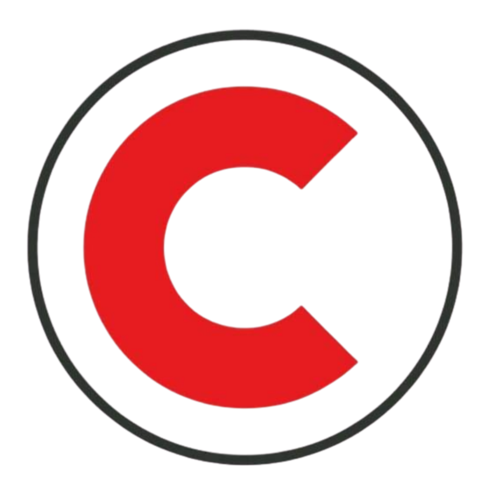

Grondverzet · Digitaliseren
De vrachtbonnen gingen van papier naar een app. Kantoor ziet nu live wat er op elke werf gebeurt.
Lees meerEen tool die gebouwd wordt rond hoe jouw bedrijf werkt. Voor wie buiten werkt, voor kantoor en voor de zaakvoerder.
Wat nog op papier of in Excel loopt, krijgt een digitale basis.
Zo deden we het bij Croes en A&M
/01Meer halen uit de software die je al hebt.
Zo deden we het bij Croes
/02Alles op één plek, zodat je ziet hoe het loopt.
/03Je ERP blijft. Wij bouwen wat het mist.
En we koppelen eraan, zodat de gegevens die er al in zitten voor je gaan werken.
We zitten samen aan tafel, lopen mee waar het nodig is, en brengen in kaart wat het probleem vandaag kost.
We ontwerpen een oplossing rond hoe jouw bedrijf werkt, met wat je al hebt als vertrekpunt.
We bouwen snel en gebruiksvriendelijk, en begeleiden je team twee maanden intensief na de oplevering.
Je ERP blijft. Het bevat al veel van je gegevens. Wij bouwen wat het mist, maken het eenvoudiger waar het te ingewikkeld is, en koppelen eraan.
Software bouwen is de voorbije jaren veel betaalbaarder geworden. Je betaalt een eenmalige prijs voor wat we bouwen, en daarna een vaste maandelijkse begeleiding: support, updates en onderhoud.
Tijd die vandaag naar overtypen en zoeken gaat, minder fouten, juister en sneller factureren, en een overzicht om op te beslissen. We brengen vooraf in kaart wat het probleem je nu kost, en tonen achteraf wat er veranderd is.
Van jou. De gegevens en de broncode blijven van je bedrijf. We werken veilig en volgens de GDPR, en iedereen ziet alleen wat hij nodig heeft.
Ja. Staat de basis er, dan kan AI erop verder bouwen: voorstellen doen, documenten ordenen, vragen beantwoorden met de kennis van je bedrijf.